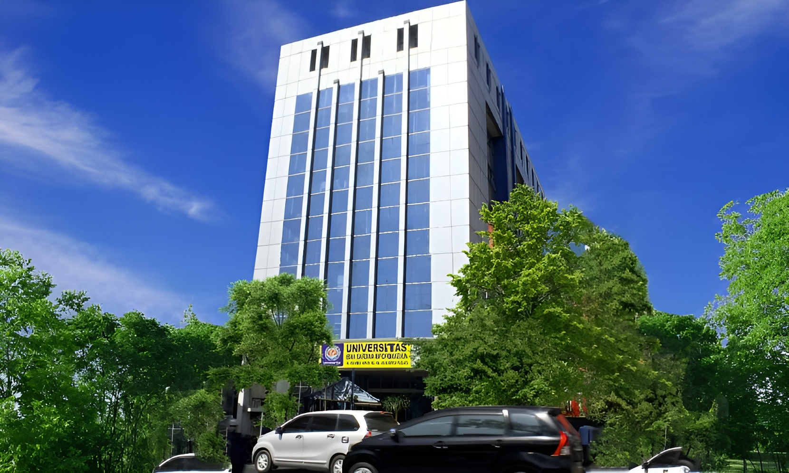
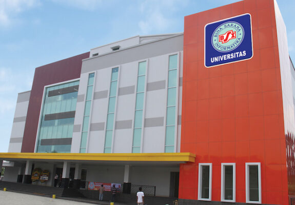

Kampus
Beberapa lokasi kampus UBSI yang ada di jabodetabek

MARGONDA

KRAMAT 98

Menjadi Universitas Unggul Di Bidang Ekonomi Kreatif Pada Tahun 2033.
Kunjungi Hal Lain?BSI merupakan kampus swasta yang bergerak di bidang pendidikan teknologi. UBSI menyediakan berbagai program pendidikan, mulai jenjang D-3 hingga S-1. Yang mana jurusan ini berada pada tiga fakultas utama, yaitu Fakultas Teknik & Informatika, Fakultas Ekonomi & Bisnis, dan Fakultas Komunikasi & Bahasa. Terdapat lebih dari 20 program studi, lho. Nah, kamu bisa banget nih memilihnya sesuai minat dan bakatmu.
S1-Rekayasa Perangkat Lunak
S1-Teknologi Informasi
S1-Sistem Informasi
S1-Ilmu Komputer
D3-Sistem Informasi Akutansi
D3-Teknologi Informasi
S1-Akutansi
S1-Manajemen
D3-Akutansi
D3-Administrasi Perkantoran
D3-Administrasi Bisnis
D3-Manajemen Perpajakan
S1-Sastra Inggris
S1-Komunikasi
D3-Hubungan Masyarakat
D3-Penyiaran
D3-Periklanan
D3-Bahasa Inggris
Beberapa lokasi kampus UBSI yang ada di jabodetabek
Sebagai salah satu kampus swasta terbaik dan berkualitas, UBSI selalu berusaha untuk menyediakan berbagai fasilitas yang mendukung kegiatan perkuliahan. Sebab kelengkapan fasilitas ini bisa menjadi salah satu indikator kesuksesan kampus.
Di UBSI sendiri menyediakan sejumlah fasilitas yang lengkap, mulai dari fasilitas pendidikan, olahraga, hingga fasilitas umum lainnya. Berikut fasilitas yang ada di UBSI:
Perpustakaan UBSI lantaran koleksinya yang lengkap dan fasilitas utama maupun penunjang yang mumpuni. Selain koleksi buku, Perpustakaan UBSI juga menyediakan jurnal-jurnal lokal, koran, hingga koran terkemuka. Tidak lupa, ada akses Wi-Fi gratis lho! Deretan kursi yang empuk bikin kita nggak mau beranjak. Belum lagi spot-spot estetiknya, sayang kalau Anda ke sini tidak berpose sejenak.
Aula merupakan salah satu ruangan cukup besar yang dapat digunakan untuk berbagai aktivitas. Antara lain upacara, rapat, atau berbagai bentuk pertemuan lainnya. Aula pertemuan pada umumnya berada langsung di dalam pintu utama sebuah bangunan. Dengan demikian, dalam mendesain interior aula pertemuan diperlukan sebuah ketelitian serta ketepatan. Sehingga mampu memberikan ketenangan serta kenyamanan dalam setiap aktivitas yang terselenggara di dalamnya
Ruang kelas idaman dengan dipenuhi segala kebutuhan yang ada tentunya menjadikan ruang kelas tersebut nyaman ditempati oleh pemilik kelasnya. Tidak hanya membuat Mahasiswa menjadi lebih bersemangat, akan tetapi hadirnya fasilitas lengkap tentunya membuat senang juga pengajar yang mengisi kelas tersebut.